Build pages, publish content, and keep your site on brand and accessible with Jarvis and Drupal Canvas. For site builders and content editors. No code required.
This handbook is for the people who run the site: site builders, content editors, communications staff. You don't need to know Drupal's internals, and you won't touch code. If you can edit a document and drag a file into a folder, you can build pages with Jarvis.
It's not a developer guide. If you want to know how Jarvis is built, or build a theme like it, read The Jarvis Technical Guide. Screenshots in this handbook come from DrupalHelps.com, a live Jarvis site. Your menus, colors and some fields will differ. The screens and buttons won't.
Everything on a Jarvis site is built one of two ways, and knowing which one you're in saves most of the confusion new editors run into.
| Canvas pages | Content items | |
|---|---|---|
| What they are | One-off pages you design visually | Blog posts and Basic pages you fill in with a form |
| Examples | Home page, landing pages, a training overview, a product page | Every blog post, an accessibility statement, an about page |
| Where you edit | The Canvas editor: drag, drop, set options | The edit form: title, body, image, fields |
| Where the look comes from | The page itself. You arrange every section. | A template shared by every item of that type |
The template is the part people miss. When you write a blog post, you don't design it. You fill in the fields, and the Blog template decides where the image goes, where the date sits and how the share buttons line up. Change the template once and every post changes with it. That's chapter 6.
If it's a one-off page, build it in Canvas. If you'll write 50 of them, it's a content item.
Canvas is Drupal's visual page builder. You see the page as visitors will, and you build it by dragging components onto it. Open any Canvas page and you'll see 4 areas.
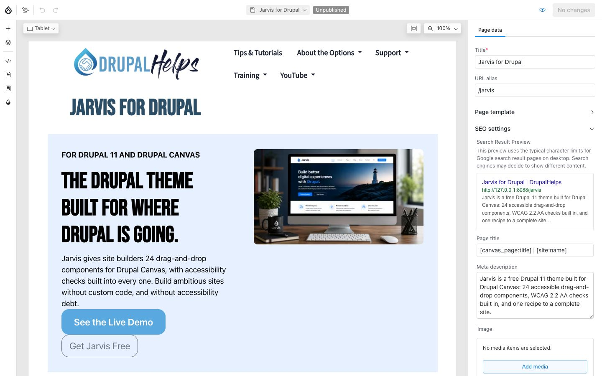
Canvas saves as you work. Nothing you do reaches visitors until you publish it, so you can experiment freely.
Left rail to find things, middle to arrange them, right panel to set them.
/training.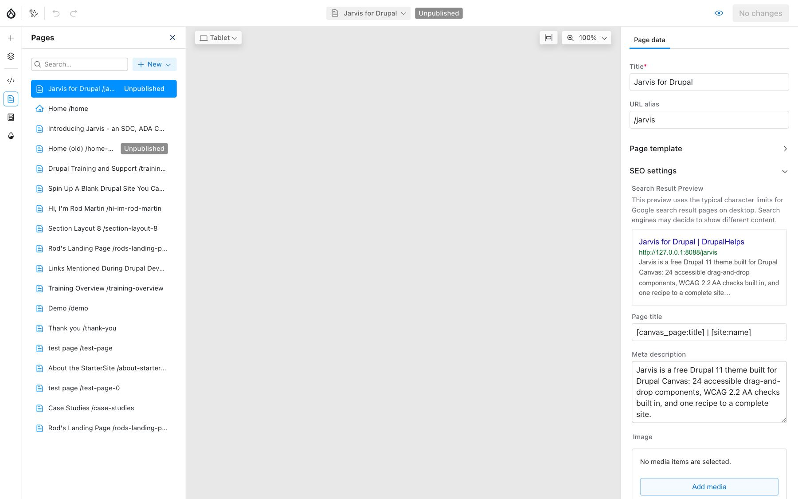
Each page in the list has its own menu with Duplicate page, Set as homepage and Unpublish page. Duplicating a page you like is the fastest way to start a new one.
Every page is a stack of sections, and every section is a layout component. Build the layout first and fill it second.
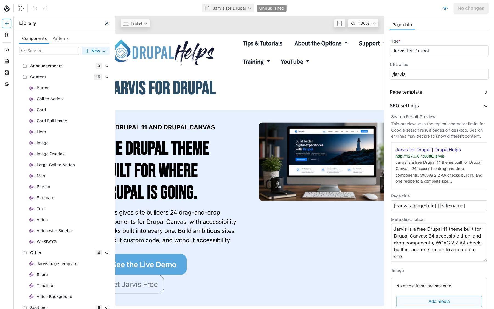
Columns stack on phones automatically. A 3 Columns section shows 3 across on a desktop, 2 on a tablet and 1 on a phone. You don't set anything for that to happen.
Click a component on the page, or click its name in Layers, and its settings open on the right. Every field there is labeled in plain language: Title, Image, Heading level, Background, Padding.
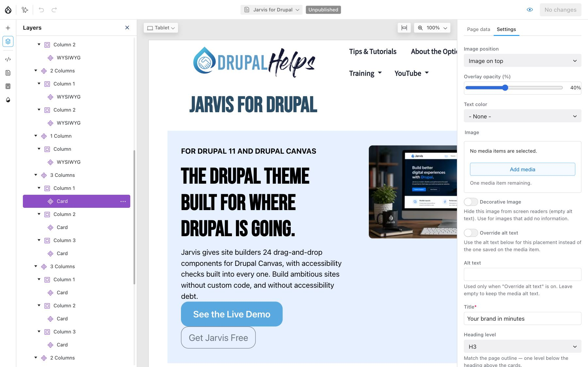
Layers is also the easiest way to work with a long page. Drag items in the outline to reorder them, or right-click a component for Duplicate, Copy, Paste, Move up, Move down and Delete.
Built a section you'll want again, like a row of 3 cards with a heading? Right-click it and choose Create pattern. It appears under the Patterns tab in the Library, ready to drag onto any page.
Changed your mind? Discard changes in the same panel throws the edits away and puts the page back the way visitors see it.
Nothing is live until you publish it. If a visitor can't see your change, check the publish button first.
Jarvis ships 23 components, filed into 3 folders in the Library. You'll use 6 of them most of the time: 2 Columns, 3 Columns, WYSIWYG, Image, Card and Button. The rest are there when a page needs something specific.
| Component | Use it for |
|---|---|
| 1 Column | A single column with a background color or image |
| 2 Columns | Text beside an image, or 2 cards side by side. Ratios like 50/50 or 66/33. |
| 3 Columns | A row of 3 cards, stats or people |
| 3 Columns (custom widths) | A content area with a sidebar. Set each column's width, and a column at 0% disappears. |
| 4 Columns | 4 short items: stats, logos, small cards |
Every section has the same core options: Width (boxed or full), Background (a brand color or an image), Text color, Gap, Padding and Margin.
| Component | Use it for |
|---|---|
| WYSIWYG | Rich text with headings, lists, links and embedded media. Your everyday text block. |
| Text | Rich text with control over reading width and alignment |
| Hero | A full-width banner: heading, subheading, a button and a background image |
| Card | Image, title, short text and a link, with the image on top, left, right or behind |
| Card Full Image | A band with an image filling one half and text in the other |
| Call to Action | A centered heading, a line of text and one button |
| Large Call to Action | A bigger pitch: heading, lead text, 3 icon rows and 2 links |
| Stat card | One big number with a short description |
| Person | A portrait, name, role and contact details |
| Button | A standalone button, when nothing else on the page carries one |
| Image | A single image, with an optional caption |
| Image Overlay | An image with a colored text card in the corner |
| Map | A Google map from a one-line address |
| Video | A YouTube, Vimeo or uploaded video, with captions |
| Video with Sidebar | A video beside a title, description and buttons |
| Component | Use it for |
|---|---|
| Timeline | Up to 6 steps or questions, shown as tabs, an accordion or a vertical rail. It makes a good FAQ. |
| Share | Share buttons for the page: Facebook, X, LinkedIn, Bluesky, Reddit, email and copy link |
| Video Background | Video playing behind a text card |
Your site can also place blocks from the Library, like the Webform block or the 3-card Blog block. They work like any other component.
Start with a section, then fill it. A component dropped straight onto the page has nothing to hold it in line with the rest.
Blog posts and Basic pages are content items. You don't design them. You fill in a form, and a template does the layout.
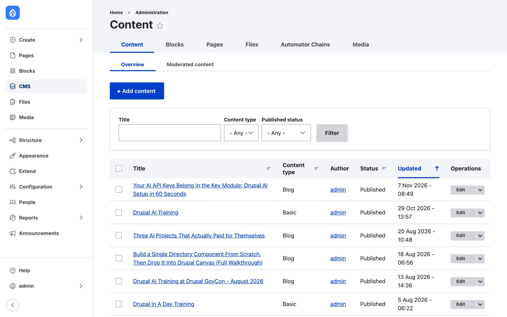
| Field | What goes in it |
|---|---|
| Title | The headline. It's also the page's main heading and the title search engines show. |
| Body | The post itself. Use real headings from the Paragraph menu, not bold text. |
| Hero Banner | The main image, picked from the media library. It leads the post and its card. |
| Publication Date | The date shown on the post and its card (Blog only) |
| Video | An optional video for the post (Blog only) |
| Abstract | 2 or 3 sentences that sum the content up. It's the text on cards and teasers. |
| URL alias, Meta tags, Menu settings | In the sidebar: the address, the search description and an optional menu link |
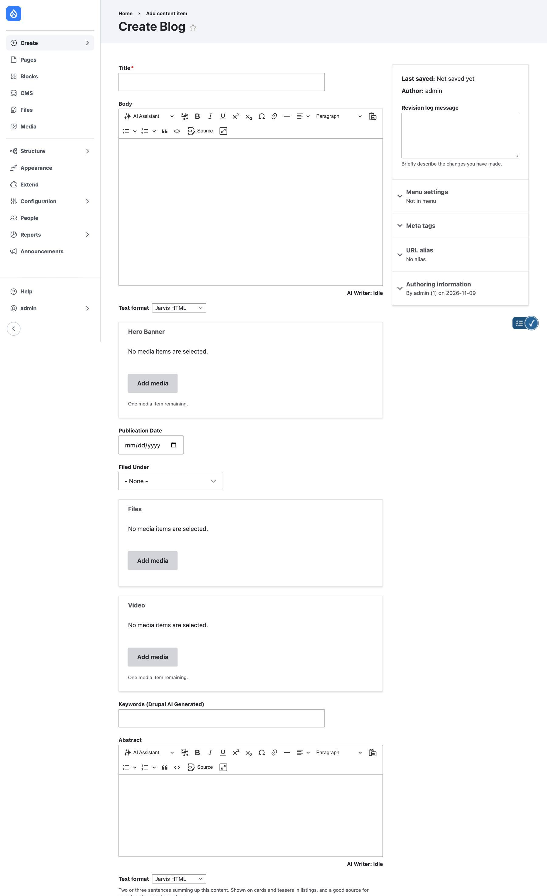
Listings don't show your body text. They show cards, and every card shows the Abstract. A post without one gets a card with an image, a title and nothing else.
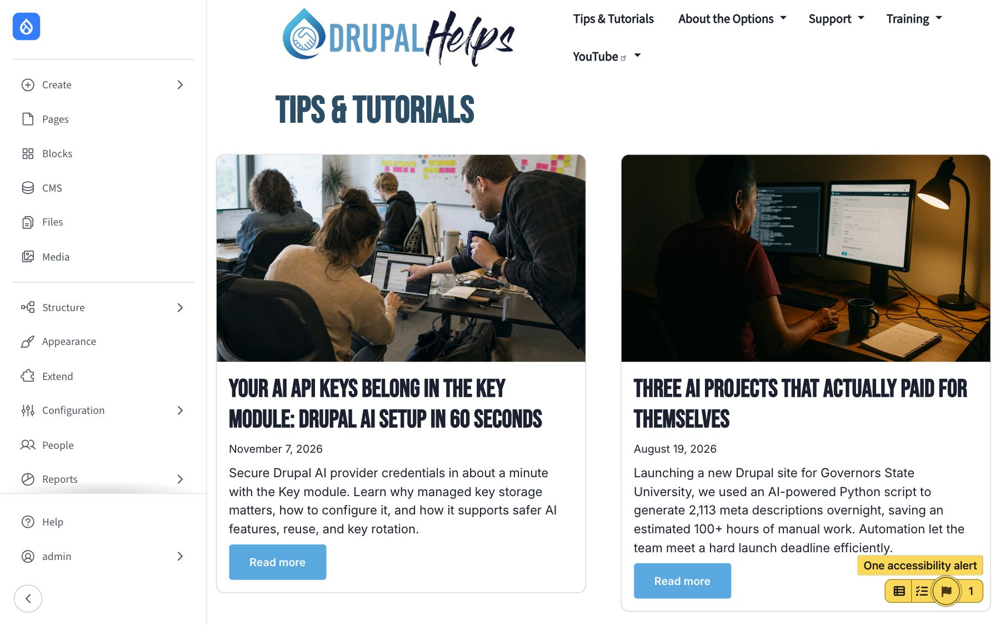
Write it for a reader deciding whether to click: what the post covers and why it's worth their time. If your site has AI configured, the Abstract can be drafted for you. Read it before you publish anyway.
Write the Abstract last, when you know what the post actually says.
Every content type has templates, and each template controls one way the content is shown. Change a template and every item of that type changes the moment you publish.
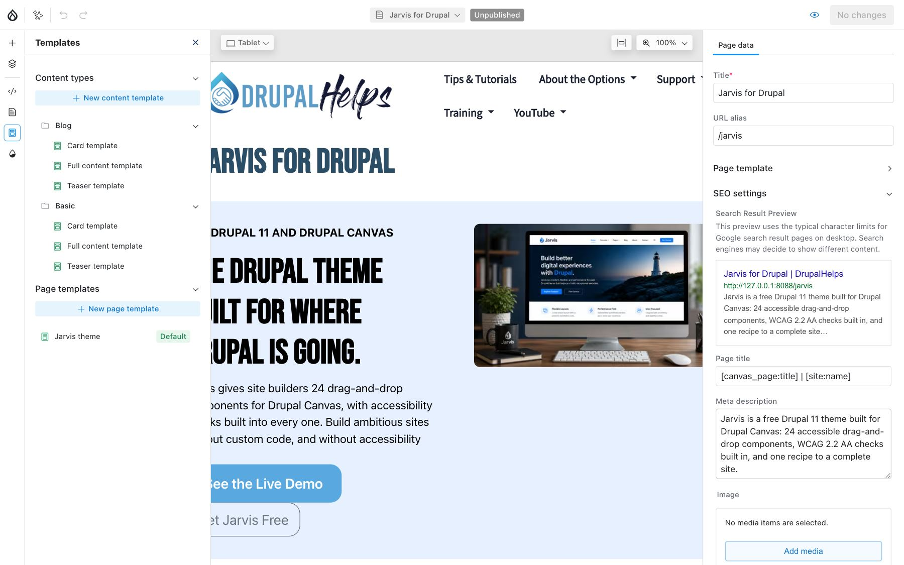
| Template | Where it's used |
|---|---|
| Full content | The page a visitor sees when they open the post |
| Card | Grid listings, like the Blog page and the 3-card Blog block |
| Teaser | Stacked lists, like topic pages, with the image on the left |
A template works like a Canvas page, with one difference: instead of typing a value into a component, you link the setting to a field. The Card's image is linked to the Hero Banner, its text to the Abstract. Canvas previews the template with a real post, so you see actual content while you work.
Preview it with 2 or 3 different posts: one with a long title, one with no image. A template that looks perfect with one post can break with another.
Edit the template when every post should change. Edit the post when only one should.
Every image, PDF and video lives in the media library, and you reuse it from there. Upload once, place it anywhere.
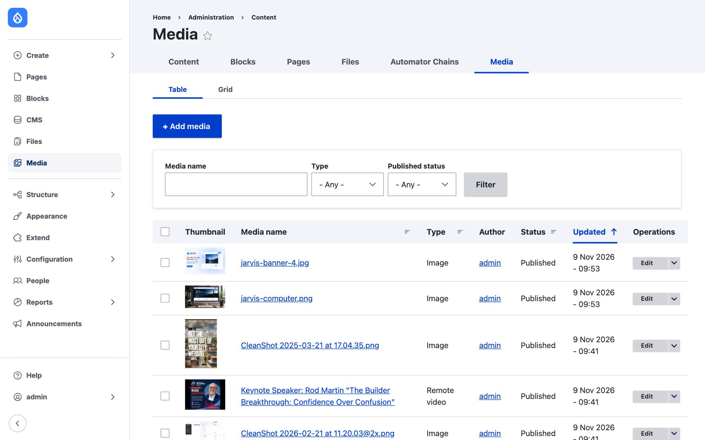
.vtt) in the Video component.Alt text is written once, on the media item, and every placement uses it. When one placement needs different wording, components with an image have Override alt text. For a purely decorative image, tick Decorative image so screen readers skip it.
Write the alt text when you upload, not when you place. You'll never be in a better position to describe the image.
The main navigation is a menu you manage in the admin, not on the page.
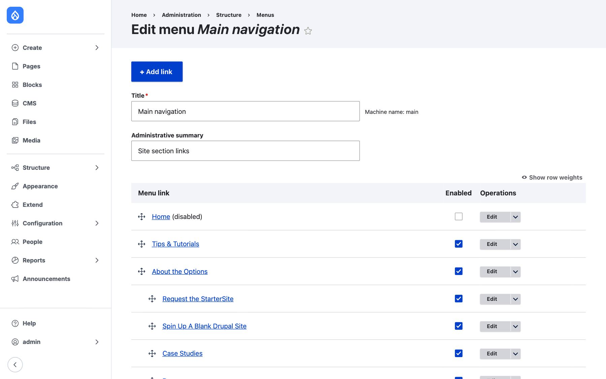
For a blog post or Basic page, you can also add the menu link from Menu settings in the sidebar of its edit form.
Jarvis marks the page a visitor is on in the menu, for sighted visitors and screen readers alike, and every dropdown works from the keyboard. You don't set anything for that.
Keep the top level short. Every extra item is one more thing a visitor has to read before they find what they came for.
Your brand is set once, in the theme settings, and every component follows it. Go to Appearance, then Settings, then Jarvis.
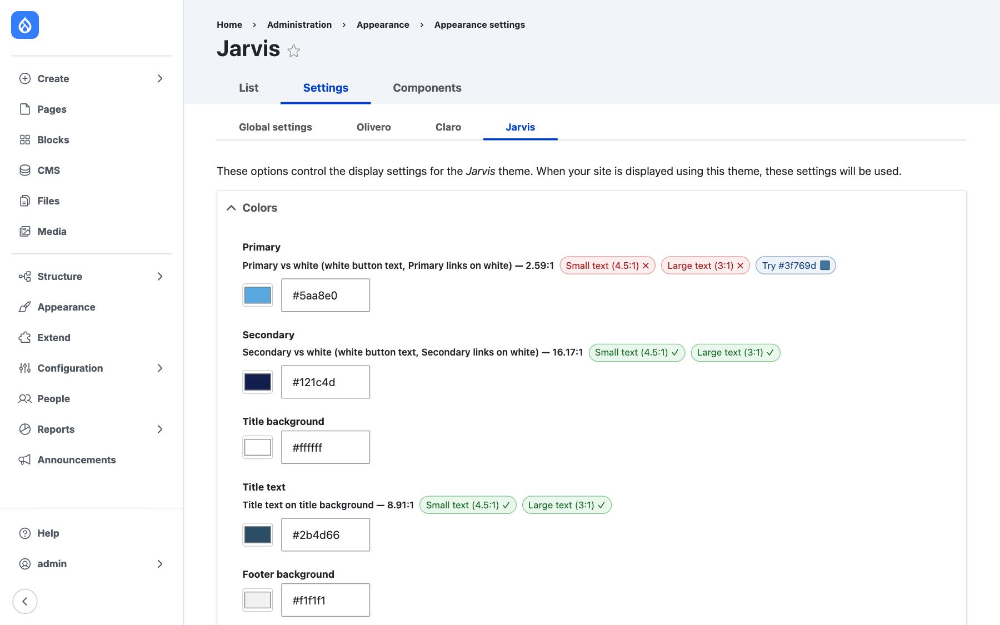
Every color shows its contrast against the text that will sit on it, checked against WCAG 1.4.3 Contrast (Minimum), Level AA: 4.5:1 for normal text and 3:1 for large text. A green check passes. A red cross fails.
Take the screenshot above. The Primary color, a light blue, scores 2.59:1 against white. That fails for both small and large text, so every white-text button in that color is hard to read. The fix isn't in the content. It's a darker shade of the same blue, chosen right here.
If a badge is red, change the color. No amount of careful writing makes low-contrast text readable.
Forms are built with Webform, under Structure, then Webforms. To put one on a Canvas page, drag the Webform block from the Library and choose the form. Jarvis styles the fields and buttons to match your brand, and spam protection is already on.
Drag Share from the Library to the end of a page. Tick the networks you want and pick a shape. The buttons sit centered with no visible label, and screen readers still announce them as "Share". To add it to every blog post, put Share in the Blog's Full content template and link its Share text to the Title. DrupalHelps.com does exactly that.
Each Canvas page has SEO settings in Page data: the page title, the meta description, and an image for social shares. Blog posts and Basic pages have the same thing under Meta tags. The defaults are sensible. The meta description is the one worth writing yourself, because it's the sentence people read before they decide to click.
Write the meta description for a person scanning results, not for a search engine.
Jarvis handles a lot of accessibility for you. It can't handle all of it, and knowing where the line falls is the whole job.
| Jarvis handles | You handle |
|---|---|
| Text contrast over images: overlays darken until the text passes WCAG AA | Alt text that says what the image means |
| Contrast checks on your brand colors | Headings in order, without skipping levels |
| Keyboard-friendly menus and visible focus | Link text that says where it goes |
| Screen reader names on buttons, like each card's "Read more" | Captions on your videos |
| Turning animation off for visitors who ask their device to reduce motion | Plain language, short paragraphs, real lists |
The cost is lopsided. Alt text takes seconds to write while the image is in front of you. Finding and fixing it later, across a whole site, takes far longer. The theme can't write it for you, and nobody fixes it once for everyone.
If it's in the editor, it's yours. If it's in the theme, report it, and it gets fixed once for every page.
| What you see | What's going on | What to do |
|---|---|---|
| Visitors don't see your change | It's saved but not published | Click Review changes and publish it |
| A card has no text under the title | The post has no Abstract | Edit the post and write one |
| Text over a photo is darker than you set it | Jarvis raised the overlay so the text stays readable | Pick a calmer photo, or accept the darker overlay |
| A color you picked doesn't take on a section | It would fail contrast there, so Jarvis falls back to a safe color | Choose a color the section supports |
| Every post changed at once | Someone published a template | Open Templates and review the last change |
| Columns stack on a phone | That's on purpose: side-by-side columns are unreadable at phone width | Nothing. Check the order still makes sense stacked. |
| A component you need isn't in the Library | It may be disabled, or it may be a block | Search the Library by name, or ask your site builder |
When in doubt, check the publish button, then the template. Most surprises are one or the other.